This page shows basic information about you. This information can be edited through the "Edit Bio" button at the bottom of the page.
On the right side, a tag cloud shows keywords collected from your publications, and a pie chart shows the distribution of your outputs over time and your collaborators. If you provide a twitter account, your most recent tweets will also show up here.
This data has been obtained from the eFEC system, and can be edited through the "Edit FEC History" button at the bottom of the page.
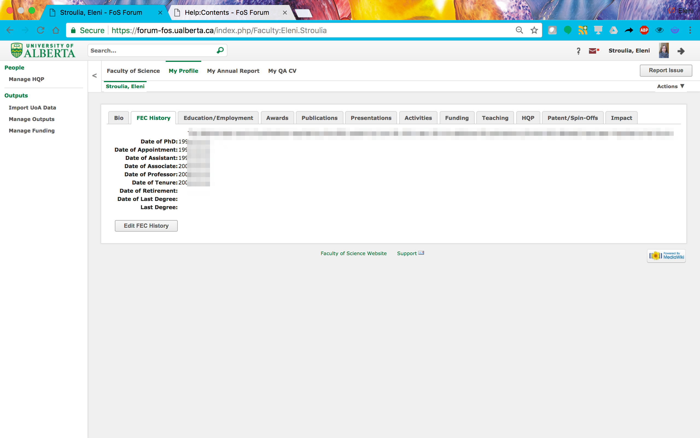This data has been obtained from the eFEC system, and can be edited through the "Edit Education/Employment" button at the bottom of the page.
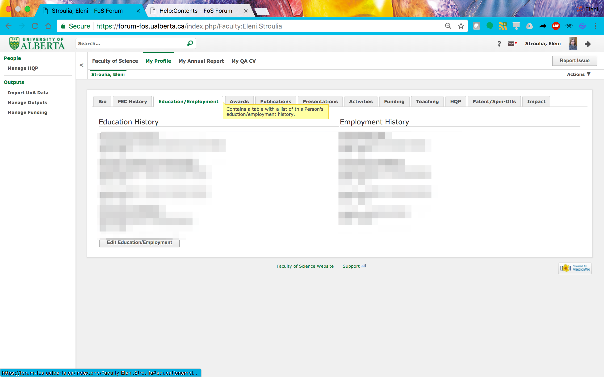The “Awards” section has been imported from the eFEC system and from a list maintained by the office of the Dean of Science.
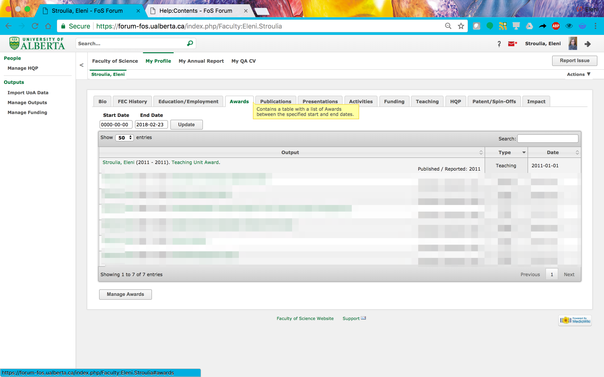The “Publications” section has been imported from the eFEC system.
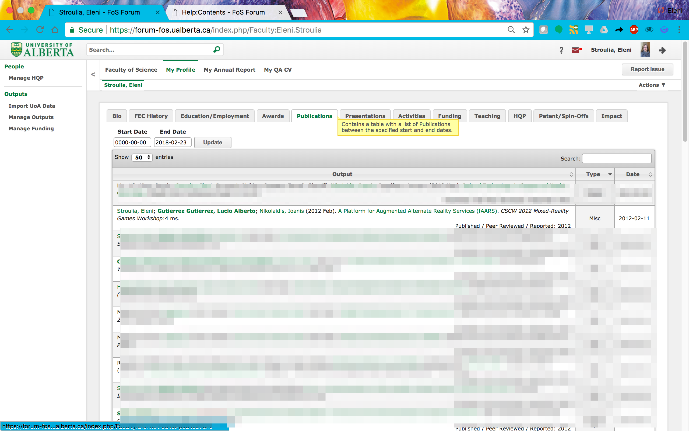The “Presentations” section has been imported from the eFEC system.
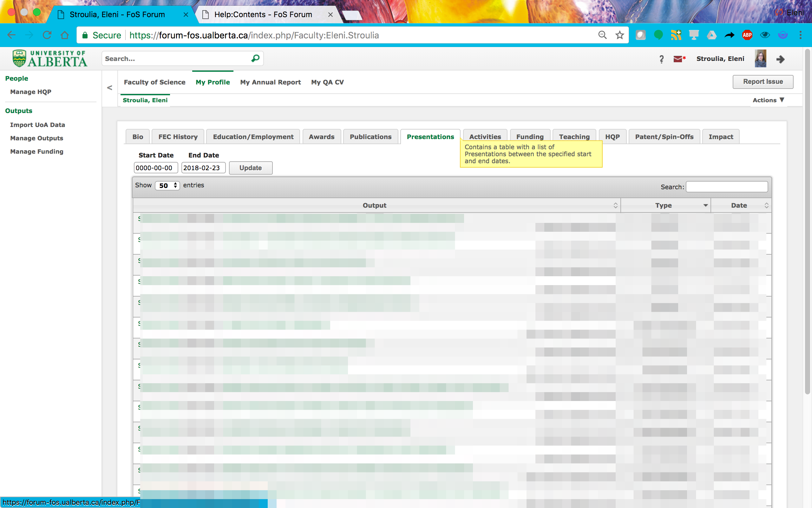The “Activities” section has been imported from the eFEC system.
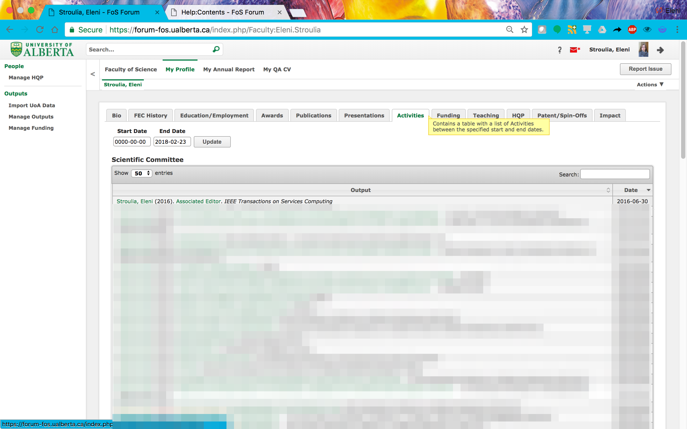The data in this section has been imported by a data set provided by TEC Edmonton.
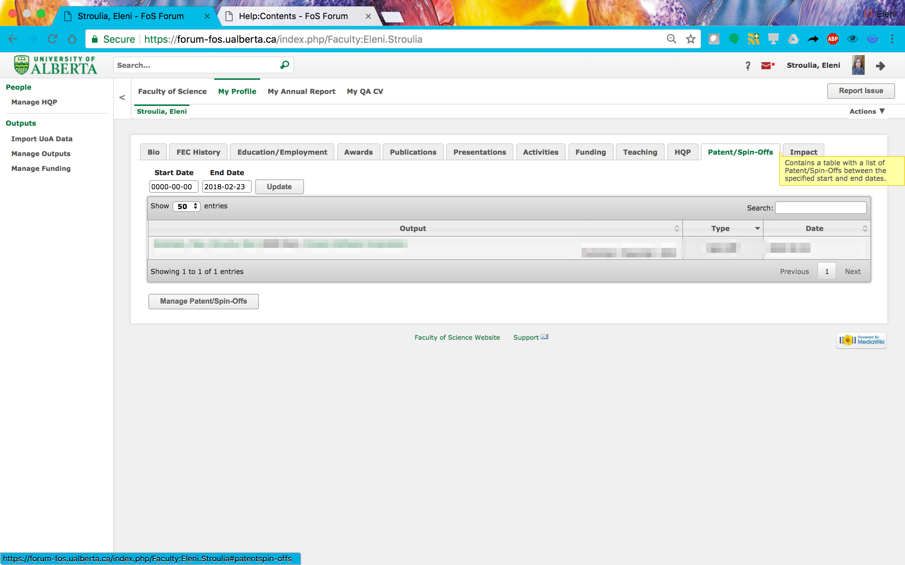
Publications, Presentations, Awards, Patents/Spin-offs, and Activities are considered as "Outputs" in the Forum, and all have similar renderings. (1) On top of the table listing, there are two date widgets that allow you to filter the period of the listed awards. (2) On the right-hand side of the table header, there is a "Search" box that allows you to search for a string in the awards' titles and descriptions. (3) The award titles ar hyperlinks that link to the individual award page, where you can edit or delete the award. (4) Finally, they are associated with metadata, shown right aligned and under the title of the award.
All outputs can be managed through the "Manage Outputs" tool, accessible from the left-hand panel. Similar buttons are also accessible through the output pages of the Profiule and Annual Report.
On this page, you can inspect all your outputs, known to the system. You cal also edit or delete any of the outputs listed.
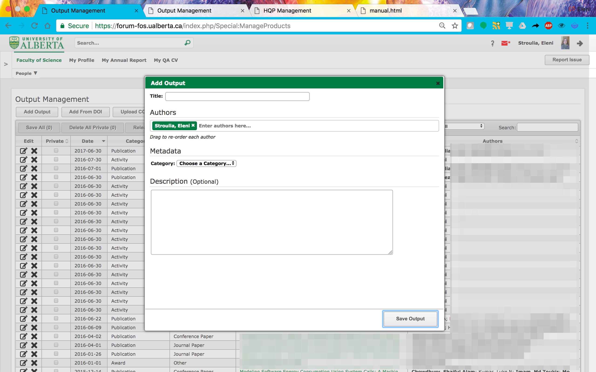
You can add a new output, using the "Add Output" button. All outputs have a title, a list of "Authors" (corresponding to all the people who contributed to the output and should be credited for it), a "Category" (Publication, Presentation, Patent/Spin-off, Award, or Activity), a "Type" (depending on the Category), and metadata corresponding to this Type. Every Output also has a "Description" field, where more information can be provided.
An important note about the "Authors" widget: to add authors, you can start writing a person's name (last name, first name); if the system recognizes the person, then it will offer an autocompletion option, and if chosen, the author's name will appear in green background. If the author is not known to the Forum, then when you hit enter, the name will be added in white background.
Publications, in particular, can be imported through their DOIs or their bibtex citations, which can be downloaded from most publishers. Unfortunately not all bibtex entries are correct and publications, thus imported, have to be edited further. This is why imported publications are marked as "Private" and are only visible when "released", from the corresponding buttons on the "Manage Outputs" table.
Under Funding, you can find two sections: (a) Revenue Accounts and (b) Awarded NSERC Applications.
Entries in the first subsection come from a data dump provided by RSO from Grants 3.0. All the accounts for which you are the primary account holder are listed here.
You can add more accounts, corresponding either to grants that have been awarded but their accounts have not yet have been setup, or to grants for which you are not the primary investigator and for which you do not hold a separte account, through the "Manage Funding" tool on the left-hand side panel.
NSERC makes available successful-application data. We have downloaded the NSERC data set (from http://open.canada.ca/data/en/dataset/c1b0f627-8c29-427c-ab73-33968ad9176e) and it is available under the second subsection. This information is used as a source of textual data from which to etxract expertise keywords (an in-progress project).
The “Courses Taught” section has been imported from a Beartracks data dump. Currently, there is no support to edit this information.
Use the "Report Issue" button (top right) to report an error in your course listing.
The data in this section has been obtained from two sources: (a) FGSR data on graduate students and their milestones; and (b) eFec data on Undergraduate trainees, Technicians and Post-doctoral fellows. Through the former data set, all graduate students are (in principle) known to the system. Due to typos, a single student may exist multiple times in the system; please use the "Report Issue" button to report such cases.
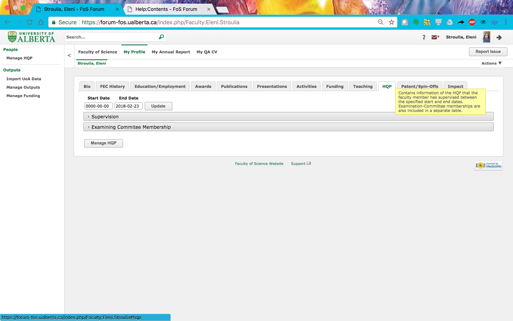To add a new HQP in the list of HQPs you supervise, you have to go to the "Manage HQP" tool (accessible from the left-hand panel, and also from the Profile and Annual Report HQP pages), and (a) find an HQP from system (if the HQP is a graduate student), or (b) add a new HQP (for all HQP other than graduate students) and (c) specify your supervision role to that HQP. If you add a bew HQP, make sure to add their email (based on their CCID, if they are UAlberta members).
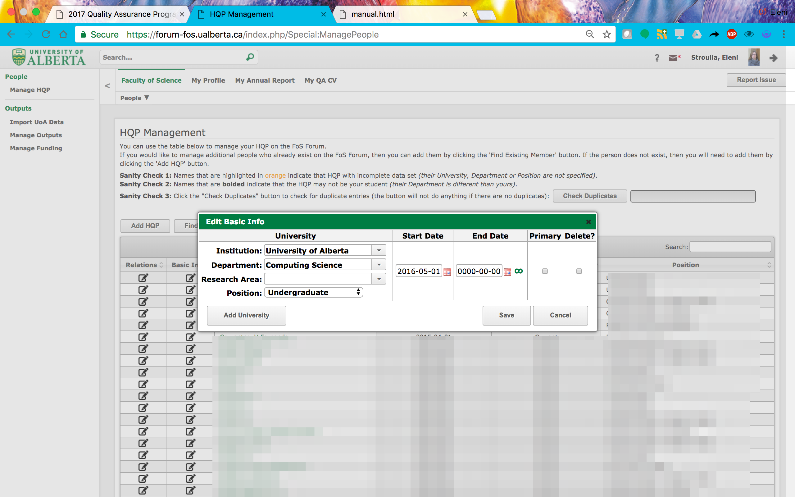
If you have provided your Google Scholar id in your Bio page, you can retrieve your Google Scholar stats in this page.
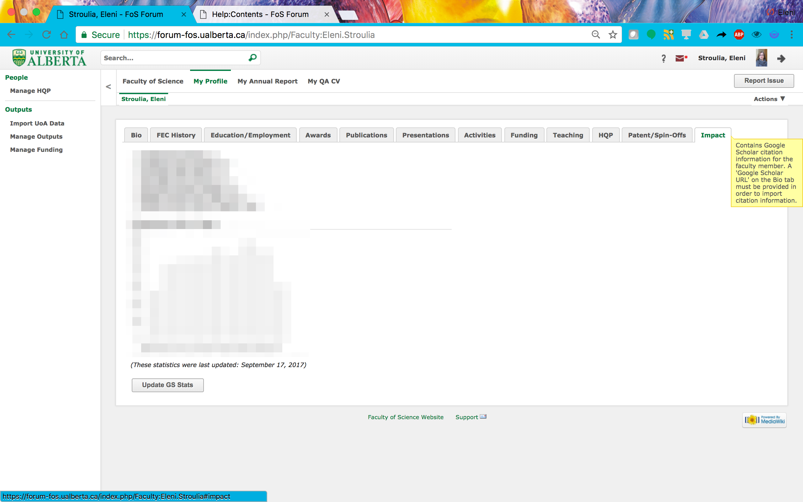
The Annual report Section of the Forum mimics the eFEC Annual Report structure. The fundamental differences between the two are the following.
First, in the Forum, you can manage information about your HQP and Outputs throughout the year through the "Manage .." tools in the left-hand panel and through the Profile pages. This information will also be visible in your Annual Report pages.
Second, the Forum imports, Grants data, in order to reduce the data entry, required.
The (i) symbol indicates the availability of information for a particular section of the Annual Report.
The "Add New" button (under "Leaves" and "Reasons for Reduced Teaching") open a dialog where information about these two types of data can be provided.
Under the "Teaching Development and Innovation" section, you can add as many distinct "Description" texboxes as you wish. You can reorder them through the right-hand side borders.
In these Descriptiin textboxes, you can refer to a specific course listed above using the "@" symbol, and the course number will be highlighted in bold.
This section lists all the HQP in your Profile, with whom your supervisory relation overlaps with the current Annual Report year.
If an HQP is missing, you have to edit the corresponding information through the "Manage HQP" tool.
This section lists all the Publications, Presentations, Patents/Spin-oOffs, and Awards in your Profile, which appeared or occured in the current Annual Report year.
If an output is missing, you have to edit the corresponding information through the "Manage Outputs" tool.
This section lists all your Service Activities, in the current Annual Report year.
If an activity is missing, you have to edit the corresponding information through the "Manage Activities" tool.
This section lists all your Revenue Accounts, in the current Annual Report year.
If an account is missing, you have to edit the corresponding information through the "Manage Funding" tool.
In this section, you can add any additional information relevant to your Annual Report. Note that the @ symbol can be used to reference any output.
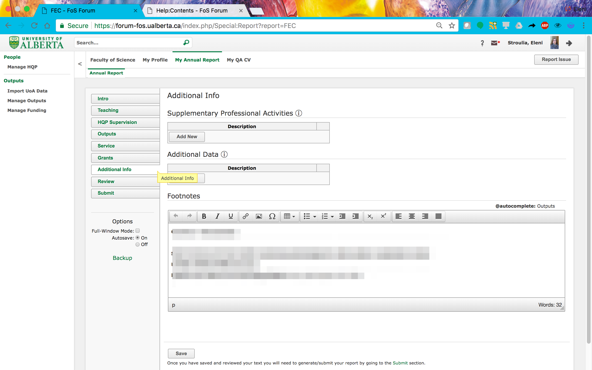In this section, you can preview your Annual Report.
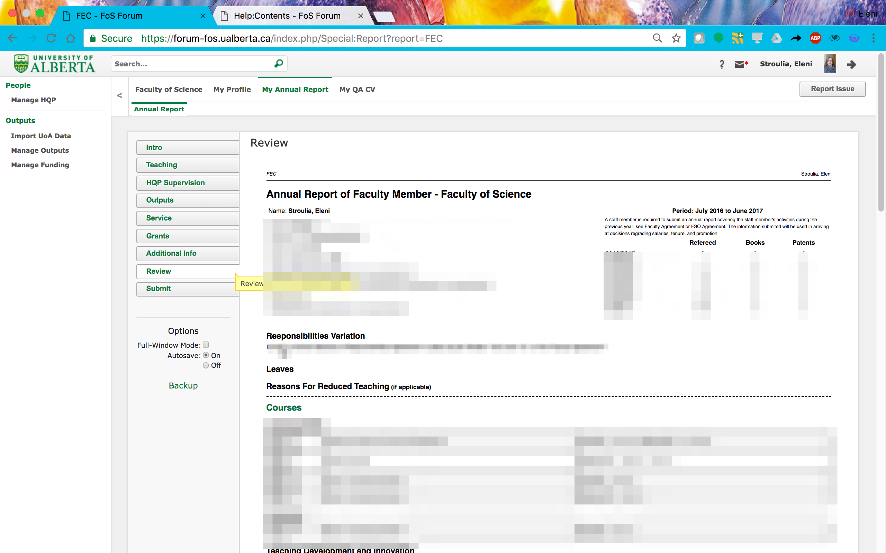On this page, you can generate a new PDF of your Annual Report, download and review it, and, if you are satisfied with its data, submit it. Once Submitted, your Annual Report will be locked and can only be unlocked at the request of your department chair.
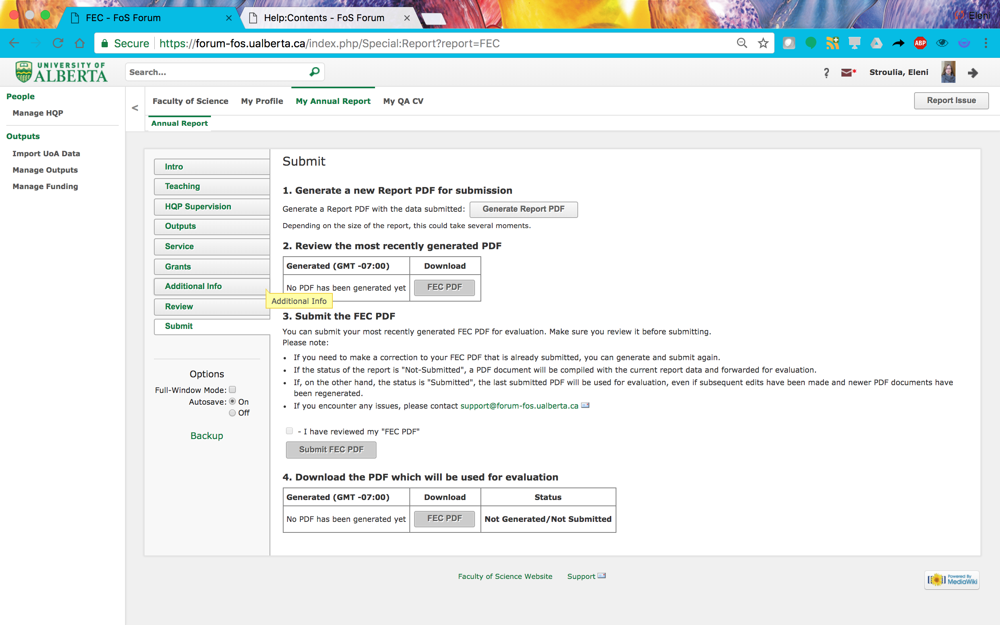The Forum collates your profile data to produce the CVs rquired by the Campus Alberta Quality Assurance program.
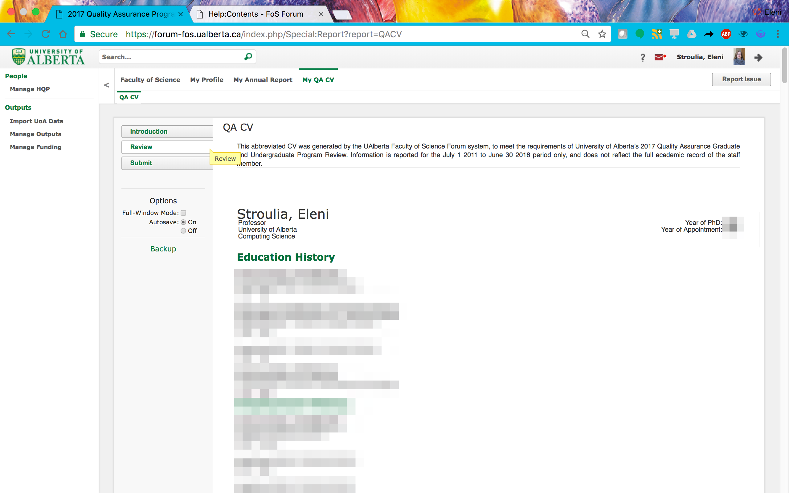